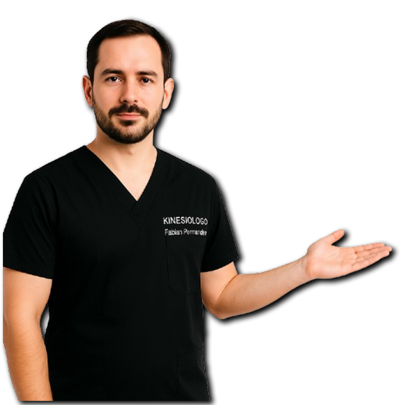
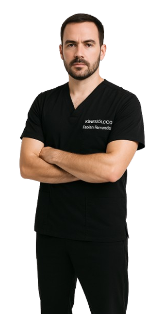

Recupera tu movilidad sin dolor
Atención kinesiológica personalizada y basada en evidencia para rehabilitar lesiones, mejorar tu rendimiento y potenciar tu bienestar físico en cada etapa de tu vida.
Especialista en rehabilitación
Atención 1 a 1
+2 Años de Experiencia
Sesiones a domicilio
¿Qué problemas puedo ayudarte a resolver?
Identifica tu dolencia. Un diagnóstico preciso es el primer paso hacia una recuperación exitosa y duradera.
Dolor Crónico
Tratamiento para lumbalgias, cervicalgias y dolores articulares persistentes que limitan tu día a día.
Lesiones Deportivas
Recuperación de esguinces, desgarros, tendinopatías y optimización del rendimiento para atletas.
Rehabilitación Post-Op
Acompañamiento integral tras cirugías traumatológicas para recuperar fuerza y movilidad de forma segura.
Alteraciones Posturales
Evaluación y corrección de desbalances biomecánicos generados por el sedentarismo o el trabajo.
Servicios
Tratamientos modernos y personalizados para abordar la raíz de tu problema, no solo los síntomas.
Sobre el profesional
Fabian Fenandez
Kinesiologo
Mi objetivo es ayudarte a entender tu cuerpo y brindarte las herramientas necesarias para superar el dolor. No creo en los tratamientos estandarizados; cada paciente tiene una historia, un contexto y objetivos únicos.
° Especialista en rehabilitación deportivas
1000+
Pacientes recuperados
+5
Años de Experiencia

Asi es la Sesión
Un proceso claro, estructurado y enfocado totalmente en tu recuperación activa desde el día uno.
Evaluación
Diagnóstico
Tratamiento
Seguimiento
Resultados reales
“Me quitó el dolor en semanas”
“Excelente atención”
“Muy profesional y cercano”
Agenda tu evaluación hoy
Agenda tu turno hoy mismo de manera rápida y directa. Cupos limitados para garantizar atención 1 a 1 de calidad.